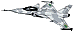

Un journal a écrit que ce qui manque aux jeunes, c'est une bonne
guerre; ce qui ne nous apprend rien sur les jeunes, mais en dit long sur
les vieux.
Il est vrai que, parfois, les militaires, s'exagérant l'impuissance
relative de l'intelligence, négligent de s'en servir.
La devise de notre siècle : la fin du monde justifie les
moyens.
I have nothing to offer but blood, toil, tears and sweat.
[Je n'ai rien à offrir que du sang, de la sueur et des larmes.]
We shall fight in France. We shall fight on the seas and oceans. We shall fight with growing confidence and growing strength in the air. We shall defend our Island, whatever the cost may be. We shall fight on the beaches. We shall fight on the landing grounds. We shall fight in the fields, and in the streets, we shall fight in the hills. We shall never surrender !
[Nous nous nous battrons en France. Nous nous nous battrons sur les
mers et les océans. Nous nous nous batttrons avec une confiance
croissante et une force croissante dans les airs. Nous défendrons
notre île, quel qu'en soit le prix. Nous nous nous battrons sur les
plages. Nous nous nous battrons sur les terrains de débarquement.
Nous nous nous battrons dans les champs, et dans les rues, nous nous battrons
dans les montagnes. Nous ne nous rendrons jamais !]
"Et nous les frapperons à la tête avec des bouteilles à bière, car c'est là tout ce que nous possédons vraiment."
This is no war of chieftains or of princes, of dynasties or national ambition; it is a war of peoples and of causes. There are vast numbers, not only in this Island but in every land, who will render faithful service in this war, but whose names will never be known, whose deeds will never be recorded. This is a War of the Unknown Warriors.
[Cette guerre n'est pas une guerre de chefs de clans, ni de princes,
de dynasties ou d'ambition nationale; c'est une guerre des peuples et des
causes. Nombreux sont ceux qui serviront fidèlement, non seulement
dans notre île, mais dans tous les pays, sans que jamais leur nom
ne soit connu, ni que leurs actes soient consignés par écrit.
C'est la guerre des Soldats Inconnus.]
This is no time for boasts or glowing prophecies, but there is this: A year ago our position looked forlorn, and well nigh desperate to all eyes but our own. Today we may say aloud before an awe-struck world: "We are still masters of our fate. We are still captain of our souls.
Never in the field of human conflict was so much owed by so many to so few.
[Jamais dans le champ des conflits humains tant de gens n'ont dû
autant à si peu.]
La première victime d’une guerre, c’est toujours la vérité.
Vous savez les chars, ça donne toujours des idées.
Submarines lived by a simple motto : there are two kinds of ships,
submarines... and targets.
[Les sous-marins ont une devise simple : il ya deux types de navires
: les sous-marins... et les cibles.]
Je vous salue Kalach
Pleine de balles
La mort est avec vous
Vous êtes maniable entre
toutes les armes
Et le plomb, fruit de vos
entrailles est béni
Sainte Kalach,
mère de la dictature
Tirez pour nous pauvres
dirigeants
Maintenant et à l’heure
de la démocratie
Le lecteur doit faire un effort pour se souvenir que l’unité
de mesure de la « qualité armement » serait quelque
chose comme le nombre de morts par million de francs dépensés.
Si les cons avaient des ailes, le ciel serait kaki.
Notre pays nous maudira, bien que nous lui ayons sauvé la
vie. Et pourtant nous lui avons épargné un effroyable bain
de sang.
Mourir à la guerre n'a jamais été un brevet de
vertu. Seulement - c'est toujours ça !- la preuve qu'on n'a pas
été le dernier des planqués.
Pour marcher au pas d'une musique militaire, il n'y a pas besoin
de cerveau, seule la moelle épinière suffit.
Une honte de notre siècle est d'avoir rendu la mort abstraite.
Quand on tue au fil de l'épée, on sait qu'on est en train
de tuer. Quand on appuie sur un bouton surveillé par un écran
de contrôle, on ne le sait plus. Le massacre prend alors des proportions
industrielles, et non plus artisanales.
Bah la guerre est une vraie sale chiennerie. Cependant souviens-toi
mon fils : être bon oui, mais si quelqu'un marche sur toi pour t'occire,
c'est lui qui a tort.
La modestie doit être la réaction naturelle de l'homme
qui reçoit les acclamations que lui ont valu le sang versé
par ses subordonnés et le sacrifice de ses amis.
La paix n'est pas bon marché, mais la guerre a un coût
infiniment supérieur.
Un uniforme ? C'est un avant-projet de cercueil.
Quand les terroristes veulent tout vous prendre, même votre
honneur, et que les gendarmes, tremblant de peur dans leur caserne d'Azzeffoun,
vous laissent tomber, il n'y a plus à hésiter : il faut prendre
les armes ou mourir.
[Prie le Seigneur et fais passer les munitions.]
Il est plus facile de faire la guerre que la paix.

La seule arme qui m'intéresse, c'est le tire-bouchon.
Plus le Gradé a de barrettes, plus le salut doit être
servile.
On aura beau mettre un policier derrière chaque touriste,
la vraie sécurité, c'est la prospérité.
Je suis en train de m'apercevoir des intérêts de la
guerre bactériologique. Inutile de tuer des millions d'innocents,
filez-leur simplement un mauvais virus, et ils resteront chez eux, cloîtrés
et hermétiquement indépendants, sourds à leur environnement.
- On part en croisade contre les injustices, tu viens ?
- Naaann ! J'suis malade !!!
Les sports ont fait fleurir toutes les qualités qui servent
à la guerre : insouciance, belle-humeur, accoutumance à l'imprévu,
notion exacte de l'effort à faire sans dépenser des forces
inutiles. Le jeune sportsman se sent évidemment mieux préparé
à partir que ne le furent ses aînés. Et quand on est
préparé à quelque chose, on le fait plus volontiers.
Une nuit de Paris réparera tout ça.
C'est trop facile quand les guerres sont finies
D'aller gueuler que c'etait la dernière.
Il ne faut pas desespérer des imbéciles. Avec un peu
d'entraînement, on peut arriver à en faire des militaires.
Je ne suis pas trop sûr que les idées arrêtent
les guerres, Cap. Elles aident à les déclencher, plutôt.
La mobilisation n'est pas la guerre.
Rien dans la vie n'est plus réjouissant que de se faire tirer
dessus sans résultat.
Certains pensent que nous sommes vulnérables parce que nous
n'avons pas d'armée. C'est exactement le contraire. C'est parce
que nous n'avons pas d'armée que nous sommes forts.
Je viens à vous avec un rameau d'olivier dans la main gauche,
et une mitraillette dans la droite.
Ne faites pas tomber le rameau d'olivier.
Si Dieu nous fait la grâce de perdre encore une pareille bataille,
Votre Majesté peut compter que ses ennemis sont détruits.
La guerre serait un bien fait de Dieu si elle ne tuait que des professionnels.
On tire dans le tas, Dieu se débrouillera pour y retrouver
les siens.
Retour à la page principale de chez Christophe.
Retour à la page de la Collection privée.